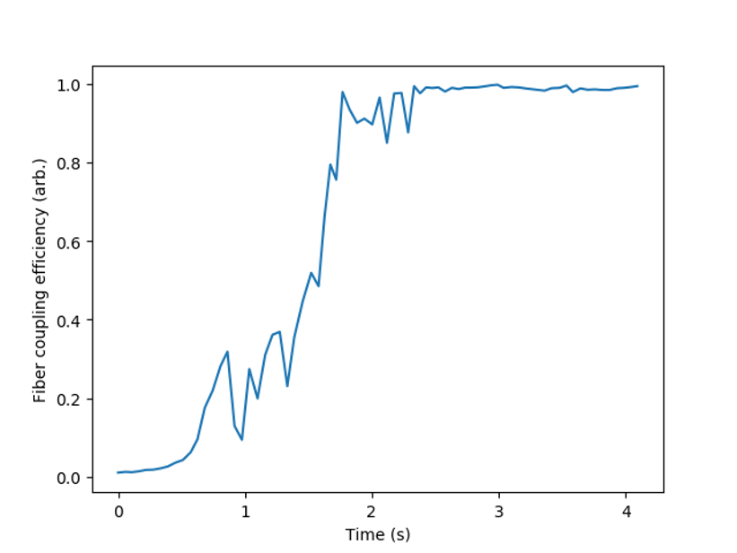
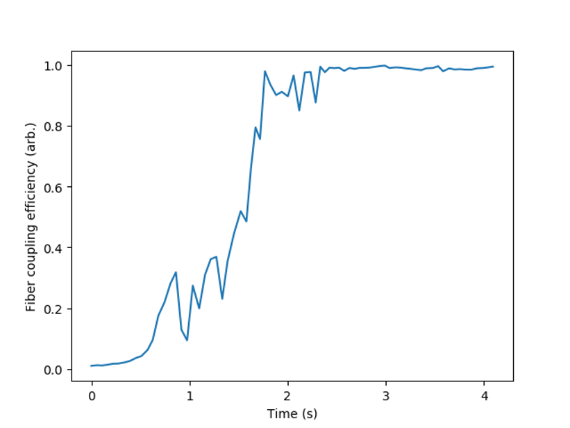

Optimization¶
What is an experiment? This question has many answers, but across many fields an experiment can be described as:
- Preparation of an initial sample
- Performing a sequence of actions on the sample
- Measuring the result
In atomic physics, theorists love to track the state of an atomic system while applying a series of unitaries; on the experimental side, it is useful instead to track the state of the things performing these actions. We suggest that any experiment can be formally modeled through a functional
\mathcal M(T) = \mathcal F[X(t<T)]
In words: the measurement result at time T is a function of the state vector X at all times leading up to the measurement. The state vector is a representation of the individual states of all things involved in the experiment. We are often concerned with determining the state vector X(t) which minimizes or maximizes \mathcal M(T).
Steady-state optimization¶
To make this formalism more intuitive, let's first study an experiment with a memoryless functional \mathcal F[X(T)], where the measurement depends on the input state at time T but not the history. Let's see how EMERGENT describes this process.
State representation¶
Each physical degree of freedom is represented by an Input node; in this case, there are two nodes labeled X and Y which
represent the tip and tilt of the mirror. The Input.state attribute stores a
float representing the instantaneous state of the input. Input nodes are attached
to Thing nodes which represent the physical actuator, such as the voltage control
board for the MEMS. The Thing stores the state of all of its attached inputs
in a dict of the form Thing.state = {'X'-60, 'Y':1}. Note that the keys of
the dict correspond to whatever the Input.name variable is. State changes
are initiated by Hub nodes, which interface with one or many things to
control the macroscopic state of the experiment. The Hub stores the
state similarly to the Thing, but with an additional tag in each dict key
corresponding to each thing's name parameter; for example, Hub.state = {'MEMS.X'-60, 'MEMS.Y':1}.
To change the state, call Hub.actuate(state), where the argument is a
dictionary containing one or more inputs to update. The actuate method will
separate the state of the Hub into separate substates for each linked
Thing, then call each Thing.actuate(substate) method to produce the
physical change. More explicitly, the physical change is carried out by
Thing._actuate(substate), which is a special method called by Thing.actuate(substate)
which should be separately implemented for each thing driver according to the
manufacturer's control scheme. Afterwards, the Thing.update(state) simultaneously updates
the internal state representations of the Input, Thing, and Hubs to
keep the network synchronized.
As well as distributing user-initiated commands, the Hub node oversees the entire experiment by issuing commands to the inputs during optimization algorithms. It contains methods, tagged with the @experiment decorator, which prepare and evaluate a target state, and closed-loop operation between the Hub and an attached Optimizer module can quickly determine the correct input states to minimize a given experimental result.
Optimization¶
To make the connection clear between the code and the formalism, here is the typical optimization sequence:
The initial state X is represented through a dict
state, and is passed into the /modules/optimizer module along with a functionexperiment.The function \mathcal F[X] is evaluated by calling
experiment(state).Hub.actuate(state)distributes commands to linked Things.- The Thing runs
Thing._actuate(state)to update the physical state. - The Thing updates the internal state representation of the Input, Thing, and Hubs.
- A physical measurement of \mathcal F[X] is made.
The learner updates its knowledge of the experimental landscape \mathcal F[X], suggests a new state X, and returns to step 2.
Note that in the code we often use state to refer to a dictionary (or a single
value in the case of an Input node), whereas the variable X refers to an
array representation of the dictionary.
Example: fiber alignment¶
An example which is ubiquitous in AMO physics is the fiber coupling problem, in which we want to steer a laser beam into an optical fiber to maximize the light transmitted on the other end. This is typically done by controlling the tip and tilt of two mirrors, where the more distant mirror is used to translate the beam relative to the fiber tip while the closer is used to adjust the angle. If only one mirror is adjusted, the measurement will look like the Gaussian overlap of the beam and the fiber mode, and simple hill-climbing algorithms can be employed to find the tip/tilt pair (x,y) which maximizes the measurement M. This is an example of a convex optimization problem, where the local minimum is also the global minimum.
And the results: the graphs below show a real fiber alignment routine run by EMERGENT. The left graph plots the simplex trajectory over the independently measured experimental landscape, while the right graph shows a time series of the optimization, demonstrating convergence in several seconds.
 

{kind=link}
Time-dependent optimization¶
Turning now to a more complicated time-dependent function, we consider the problem of magneto-optical trapping, in which atoms are trapped at the zero of a quadrupole magnetic field in a red-detuned laser beam. The problem can be formulated as a memoryless cost function depending on parameters such as the formulated as a memoryless function depending on parameters such as the field strength and laser detuning, but the trapping can be improved by adding a time-dependent ramp such that the Doppler and Zeeman shifts keep the beam resonant while the atoms cool. In this case we are tasked with determining not the number of trapped atoms. Algorithmic optimization of atom cooling has been achieved with the help of virtual Things called Ramps, which can output a parameterized ramp of a given shape (linear, exponential, etc) in terms of several optimizable network inputs (initial/final points, decay time, etc).